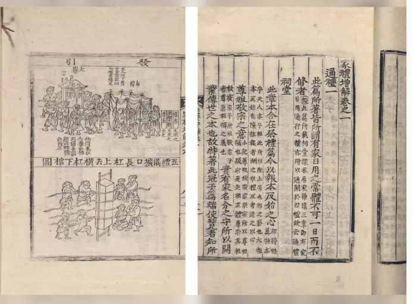

 点击图片可查看大图 · 原始图像 694×511 px 成交 〔朝鲜〕李孟宗 撰 家礼增解 十四卷 目录 一卷 李孟宗 · 19世纪朝鲜刊本 成交记录RMB 7,475 估价RMB 1,000-2,000 记录信息 拍卖日期2023-07-08 09:30 拍卖公司海王村 拍卖专场2023年秋季书刊资料文物同步拍卖会 古籍善本资料专场 创作年代19世纪朝鲜刊本 开本半框24.3×18.5cm 尺寸类型半框 高 × 宽24.3 × 18.5 cm 纸张原表未著录 成交价原文RMB 7,475 来源位置Excel 第 8 行